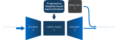

XPROAX is a local explanation method specified for text classifiers. Benefit from the more careful construction of neighborhoods, XPROAX provides high-quality explanations with more details for understanding black-box decisions. The explanation consists of four components: (i) intrinsic words, (ii) extrinsic words, (iii) factuals, (iv) counterfactuals.
One major challenge of explaining text classifiers is neighborhood construction. The frequently used word-dropping method can easily lead to incomplete sentences. To address this challenge, the basic idea behind XPROAX is to deploy a generative model for generating better (semantically meaningful and grammatically correct) neighboring texts. Furthermore, we propose a two-staged progressive neighborhood approximation method in this paper. It helps constraint the neighborhood of a given input based on the local manifold and improves the quality of constructed neighborhoods.

In this paper, we perform qualitative and quantitative evaluations on XPROAX and compare the proposed method with state-of-the-art local explanation methods.
Experimental results show that our method outperforms the competitors .
The experiments also illustrates the quality of neighborhoods have a huge impact on final explanations.
More specifically, the comparison between XPROAX and XSPELLS shows that the careful construction of the neighborhood overcomes the weakness of random sampling in a latent space.
(Please refer to the paper for more details)